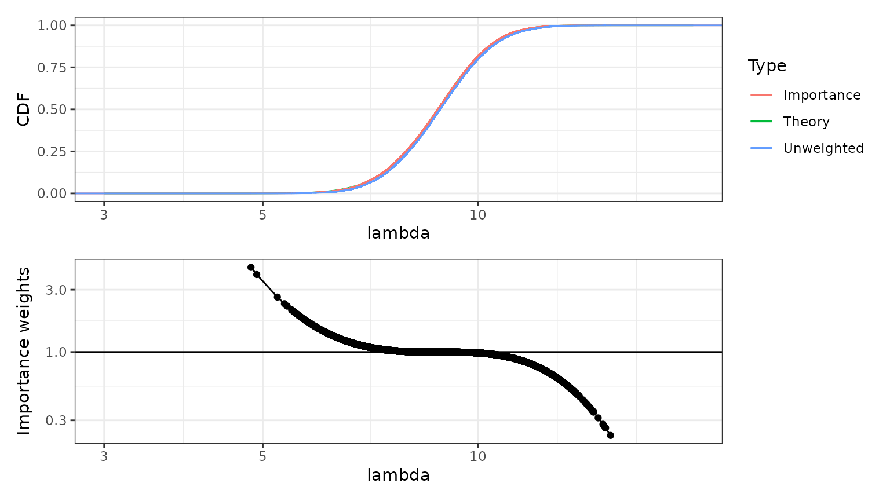

vignettes/articles/T4sol.Rmd
T4sol.RmdThis document uses a code_folding: hide option to handle showing/hiding code when building locally. Download and build the source file from https://github.com/finnlindgren/StatCompLab/blob/main/vignettes/articles/T4sol.Rmd to see how that feature works.
For case 3, the negated log-likelihood is \[ \widetilde{l}(\theta) = n e^\theta - \theta \sum_{i=1}^n y_i + \text{constant} \] with 1st order derivative \[ \frac{\partial}{\partial\theta}\widetilde{l}(\theta) = n e^\theta - \sum_{i=1}^n y_i \] which shows that \(\widehat{\theta}_\text{ML}=\log(\overline{y})\), and 2nd order derivative \[ \frac{\partial^2}{\partial\theta^2}\widetilde{l}(\theta) = n e^\theta \] which is equal to \(n\lambda\) for all \(y_i\) values, so the inverse of the expected Hessian is \(1/(n\lambda)\).
CI1 <- function(y, alpha = 0.05) {
n <- length(y)
lambda_hat <- mean(y)
theta_interval <-
lambda_hat - sqrt(lambda_hat / n) * qnorm(c(1 - alpha / 2, alpha / 2))
pmax(theta_interval, 0)
}
CI2 <- function(y, alpha = 0.05) {
n <- length(y)
theta_hat <- sqrt(mean(y))
theta_interval <-
theta_hat - 1 / sqrt(4 * n) * qnorm(c(1 - alpha / 2, alpha / 2))
pmax(theta_interval, 0)^2
}
CI3 <- function(y, alpha = 0.05) {
n <- length(y)
theta_hat <- log(mean(y))
theta_interval <-
theta_hat - 1 / sqrt(exp(theta_hat) * n) * qnorm(c(1 - alpha / 2, alpha / 2))
exp(theta_interval)
}We can test the interval construction methods with the following code.
y <- rpois(n = 5, lambda = 2)
print(y)
CI <- rbind(
"Method 1" = CI1(y),
"Method 2" = CI2(y),
"Method 3" = CI3(y)
)
colnames(CI) <- c("Lower", "Upper")| Lower | Upper | |
|---|---|---|
| Method 1 | 0.7604099 | 3.239590 |
| Method 2 | 0.9524829 | 3.431663 |
| Method 3 | 1.0761094 | 3.717094 |
The methods will not always produce valid intervals.
This can happen when \(n\) or \(\lambda\) are close to zero.
n <- 5
lambda <- 10
y <- rpois(n, lambda)
y # Actual values will depend on if set.seed() was used at the beginning of the document## [1] 11 7 11 8 8From probability theory, we know that \(p(\theta)=p(\lambda) \frac{d\lambda(\theta)}{d\theta}\), so that \[ p(\theta) = a \exp(-a\lambda) \exp(\theta) = a \exp\left( \theta-ae^\theta \right) \]
First, we sample from the Gaussian approximation to the posterior distribution.
To avoid numerical problems, we calculate the log of the unnormalised weights, and then shift the results to get a numerically sensible scale when we exponentiate.
log_weights <- (x * (1 + sum(y)) - (a + n) * exp(x)) -
dnorm(x, mean = log(1 + sum(y)) - log(a + n), sd = 1 / sqrt(1 + sum(y)), log = TRUE)
weights <- exp(log_weights - max(log_weights))The credible interval for \(\theta\) can now be extracted from quantiles of the weighted sample, and the \(\lambda\)-interval is obtained by the transformation \(\lambda=\exp(\theta)\):
## [1] 1.873696 2.448506
lambda_interval <- exp(theta_interval)
lambda_interval## [1] 6.512323 11.571043The code for the above steps was the following:
The figure below shows the empirical distributions of the unweighted and weighted samples \(\{x_k\}\) (with weights \(\{w_k\}\)), together with the theoretical posterior empirical distribution function. The weighted, importance sampling, version is virtually indistinguishable from the true posterior distribution. The unweighted sample is very close to the true posterior distribution; for this model, the Gaussian approximation of the posterior distribution of \(\log(\lambda)\) is an excellent approximation even before we add the importance sampling step.
# Plotting updated to include a plot of the importance weights
p1 <-
ggplot(data.frame(lambda = exp(x), weights = weights)) +
ylab("CDF") +
geom_function(fun = pgamma, args = list(shape = 1 + sum(y), rate = a + n),
mapping = aes(col = "Theory")) +
stat_ewcdf(aes(lambda, weights = weights, col = "Importance")) +
stat_ecdf(aes(lambda, col = "Unweighted")) +
scale_x_log10() + xlim(1, 20)## Scale for 'x' is already present. Adding another scale for 'x', which will
## replace the existing scale.
p2 <- ggplot(data.frame(lambda = exp(x), weights = weights),
mapping = aes(lambda, weights / mean(weights))) +
ylab("Importance weights") +
geom_point() +
geom_line() +
geom_hline(yintercept = 1) +
scale_y_log10() +
scale_x_log10() + xlim(1, 20)## Scale for 'x' is already present. Adding another scale for 'x', which will
## replace the existing scale.
# The patchwork library provides a versatile framework
# for combining multiple ggplot figures into one.
library(patchwork)
(p1 / p2)## Registered S3 method overwritten by 'spatstat.geom':
## method from
## print.boxx cli
In the lower figure, the importance weights have be normalised by their average, so that values above 1 mean that the corresponding sample values should occur more often in the true, target, distribution than they do in the raw samples, and values below 1 mean that those sample values should occur less frequently in the target distribution. The scaled weights are shown on a logarithmic scale.